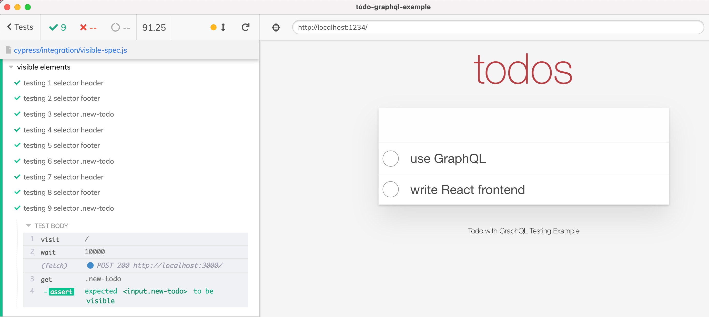
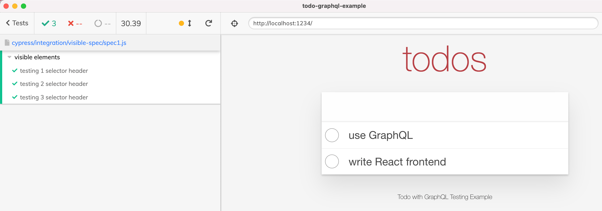
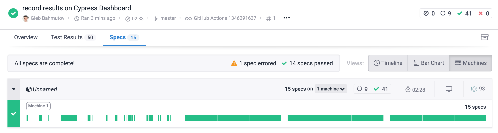
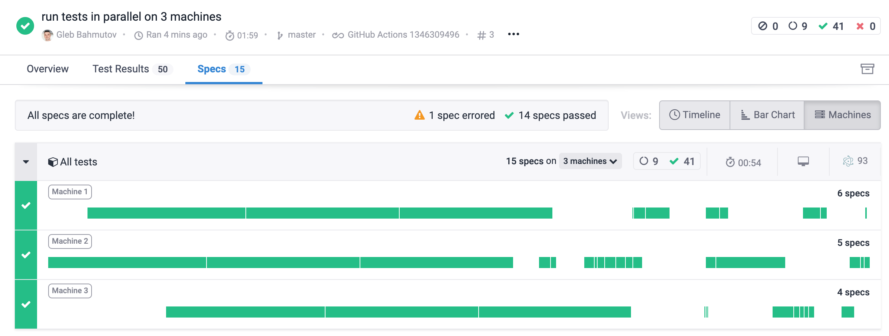

I have made cypress-each to simplify generating tests from data. This plugin has already proved itself useful for API testing, and in this post I want to show a few more tricks it can help you do, like making the tests faster by generating separate spec files to be executed in parallel.
The initial test
Let's start with a single test that checks if elements are visible.
1 | it('shows the expected elements', () => { |
You can watch me refactor this single test to avoid command duplication in the video below
The better test iterates through the list of selectors
1 | it('shows the expected elements', () => { |
The above test has a problem: if the first selector is wrong, the rest of the commands and assertions is skipped when it fails to find an element. Are the "footer" and the ".new-todo" selectors valid? Are those elements visible? We do not know, since the test has failed on the first command. We want to separate this test into 3 independent tests, and do it with minimal code duplication.
Using cypress-each to generate independent tests
This is where the cypress-each plugin comes in handy. It can generate separate it tests (or even separate describe suites) from a list of items.
1 | $ npm i -D cypress-each |
You can import the plugin directly from the spec file, or from the Cypress support file. If you import it from the support file, the it.each syntax becomes available in every spec.
1 | import 'cypress-each' |
You can watch me refactor the single test using cypress-each plugin in the video below
There are now three independent tests:
- "element header is visible"
- "element footer is visible"
- "element .new-todo is visible"
If one test fails, the rest still runs and gives you the complete picture.
Tip: You can be quite flexible with the test title pattern. For example, you can use %k and %K placeholders to insert the item's index (0-based and 1-based respectively). You can even use your own test title format function like this:
1 | import 'cypress-each' |
The above syntax will create 3 tests with titles testing element 1 "header", testing element 2 "footer", and testing element 3 ".new-todo".
Parallel testing
If we have a lot of data items, and generate a test for each one, the entire spec can become quite long. For example, the following spec simulates a slow loading page using cy.wait(10000) command. With 9 element selectors, this small spec example runs for 90 seconds!
1 | import 'cypress-each' |

Ughh, brutal. The best way to make the entire testing step faster is by running lots of tests in parallel, as described in the blog post Make Cypress Run Faster by Splitting Specs and Parallel end to end testing with Cypress, Docker and GitLab. But how do we split the tests generated using it.each into separate spec files?
First, instead of a single visible-spec.js spec file, create a folder and place several empty spec files there. For example, if we want to run the element tests using 3 test runners in parallel at a time, create 3 spec files there.
1 | cypress/ |
Second, put the selector data into a JSON file to be imported from each spec.
1 | [ |
Third, move each test callback function into a separate JavaScript file. It is not a spec itself, it just exports the test callback to be imported by other specs.
1 | export const testTitle = (selector, k) => |
Now let's finish the individual spec files spec1.js, spec2.js, and spec3.js. Each will handle just a subset of the generates tests by ... filtering the data items! Since we have three different spec files, we will use module 3 to split the items into tests for each spec.
1 | import selectors from './selectors.json' |
🎁 You can find these specs in the repo bahmutov/todo-graphql-example.
The spec1.js executes a third of the tests.

Similarly, the other two spec files pick up a third of the test cases each. The spec2.js uses modulo 3 equals 1 to filter the test cases
1 | describe('visible elements', () => { |
The spec3.js picks the last third of the test cases using the module 3 equals 2.
1 | describe('visible elements', () => { |
You can also split the list of items into groups using Cypress._.chunk
1 | describe('visible elements', () => { |
I have added the support for chunking the items into describe.each and it.each, see Chunking. For example, if we want to split all items across three spec files, the test files would use:
1 | // spec1.js |
Run specs in parallel
To show the time savings from running the generated tests in parallel, I have set up recording the tests results on Cypress Dashboard. The initial run used a single machine:

Then I set up the CI to run the same tests using 3 containers on GH Actions, see the .github/workflows/ci.yml file:
1 | name: ci |
The new test run took 1/3 of the time because our long specs were executed on 3 machines at once.

Much better.